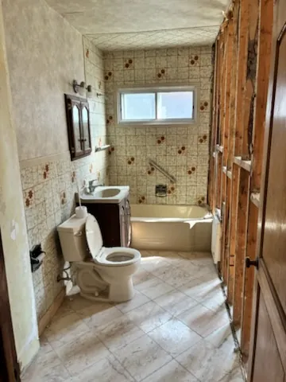
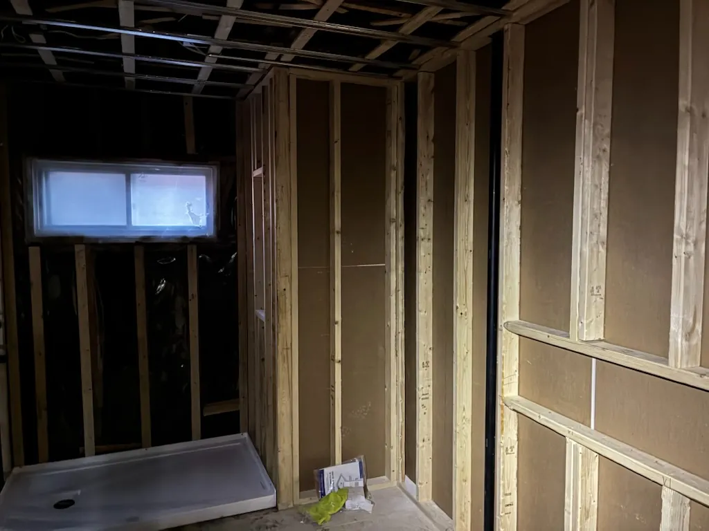

Avant de choisir la céramique, il faut penser à tout ce qu’on ne verra plus une fois les murs fermés : la tuyauterie, le câblage, la ventilation et l’étanchéité. C’est là que se joue la durée de vie d’une salle de bain. Voici les grandes étapes d’une rénovation complète, telles que nous les réalisons sur nos chantiers.

1. Planifier avant de démolir
Tout commence par une visite et un plan clair : ce qu’on garde, ce qu’on déplace et ce qu’on change. Les questions qui comptent à cette étape :
- Baignoire ou douche? Remplacer la baignoire par une grande douche est une demande fréquente. Il faut vérifier l’emplacement du drain et la pente disponible.
- La plomberie bouge-t-elle? Déplacer la toilette ou la vanité change le budget et peut demander un permis.
- Les matériaux. Céramique, base de douche, robinetterie et vanité doivent être choisis et commandés tôt, car leurs délais de livraison dictent souvent l’échéancier.
2. La démolition et l’inspection
On retire la céramique, la baignoire, les accessoires et, souvent, les murs jusqu’à la charpente. C’est le moment de vérité : on inspecte l’état du bois, cherche les traces d’anciennes infiltrations ou de moisissure, et vérifie la tuyauterie et le filage. Mieux vaut corriger ces problèmes maintenant que dans cinq ans, derrière une céramique neuve.
3. La charpente, la plomberie et l’électricité
Une fois la pièce à nu, on refait ou on redresse l’ossature pour obtenir des murs droits, une condition essentielle pour une belle pose de céramique. On prévoit les renforts pour la vanité, les barres d’appui et les accessoires, ainsi que l’encastrement des niches de douche.
Les plombiers et électriciens passent ensuite : nouvelles conduites, robinetterie encastrée, prises protégées, éclairage et ventilateur. Un bon ventilateur, bien raccordé vers l’extérieur, est la meilleure protection contre la moisissure.

4. L’étanchéité de la douche : l’étape la plus importante
La céramique et le coulis ne sont pas étanches. Ce qui protège réellement les murs, c’est ce qu’il y a derrière : un panneau adapté aux pièces humides et une membrane d’étanchéité continue, qui remonte sur les murs de la douche et se raccorde à la base.
- Les coins, les joints entre panneaux et les sorties de robinetterie reçoivent des bandes et des pièces de membrane.
- Les niches encastrées sont entièrement recouvertes de membrane, avec une légère pente pour que l’eau ne stagne pas.
- Une fenêtre dans la douche demande un soin particulier : cadrage recouvert de membrane, appui en pente vers l’intérieur de la douche et joints scellés avec un produit adapté. C’est souvent à cet endroit que les vieilles salles de bain pourrissent.
5. La pose de la céramique
Sur des murs droits et étanches, la céramique peut enfin être posée. Pour les grands formats et les carreaux rectangulaires, on utilise un système de mise à niveau (les petites attaches visibles sur la photo) qui garde les carreaux parfaitement alignés pendant que la colle sèche, sans arêtes qui dépassent.
Viennent ensuite le coulis, le scellant aux jonctions (bain, base, coins intérieurs) et les profilés de finition.
6. Les finitions et la livraison
Installation de la vanité, de la toilette, de la robinetterie, de la porte ou du panneau de douche, des accessoires et de l’éclairage. On termine par la peinture, un nettoyage complet et une vérification de chaque élément avec le client.
Combien de temps? Pour une rénovation complète, comptez généralement de deux à quatre semaines de travaux une fois les matériaux reçus. La durée varie selon ce qu’on découvre à la démolition et le temps de séchage des produits.
Les erreurs qui coûtent cher
- Poser la céramique directement sur du gypse ordinaire dans la douche.
- Négliger la ventilation, ou rejeter l’air humide dans l’entretoit au lieu de l’extérieur.
- Oublier les renforts dans les murs pour la vanité ou les barres d’appui.
- Commander les matériaux trop tard et bloquer le chantier en attendant une livraison.
- Laisser plusieurs corps de métier travailler sans coordination ni échéancier.
Un seul interlocuteur du début à la fin
Une salle de bain fait intervenir plusieurs métiers : démolition, menuiserie, plomberie, électricité, céramique et finition. En tant qu’entrepreneur général licencié RBQ, Stratimo coordonne tous les intervenants, suit l’échéancier et le budget, et reste votre seul interlocuteur du plan à la livraison, à Montréal, à Laval et sur la Rive-Nord.